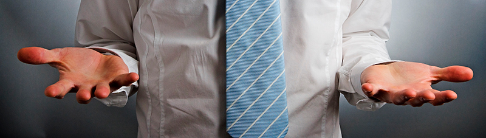
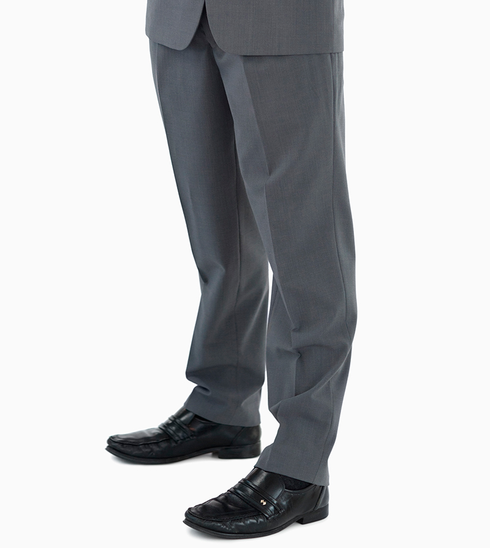

Esta publicación digital se ha concebido como un programa de entrenamiento que contribuye a desarrollar las habilidades y capacidades que nos permitirán afrontar con éxito la exposición y defensa de trabajos ante equipos de evaluación. Las unidades desarrolladas integran los elementos que uno debe conocer, comprender, procesar internamente e incorporar en la actitud, con el fin de lograr una comunicación de éxito.
El objetivo de la publicación es facilitar la adquisición de habilidades relacionadas con la comunicación interpersonal, con el propósito de aumentar la capacidad de la comunicación efectiva frente a equipos de evaluación.
Hay muchas situaciones en las que el poder de la oratoria, es fundamental para lograr el éxito. En aquellas, en las que se nos pide que expongamos ante un tribunal, la forma en que nuestro cuerpo se desplaza y se coloca en el espacio en relación a otros objetos y ante los evaluadores es muy importante, ya que contribuye a crear una imagen de nosotros mismos y nuestra competencia profesional.
Hablar en público de forma más competente te ayudará a lograr tus objetivos. Si no expones de forma adecuada, puedes obtener una calificación inferior por parte del tribunal. Cuando estés frente a ellos, háblales con firmeza, convicción y determinación.
En este capítulo, vamos a tratar la forma en que podemos utilizar la comunicación no verbal y nuestros movimientos en el espacio, como una herramienta para fortalecer el mensaje que tratamos de comunicar y aumentar las posibilidades de éxito.
La comunicación no verbal, decisiva para alcanzar el éxito en la defensa de la programación.
Los elementos que integran la comunicación no verbal son: la mirada, la expresión facial, la sonrisa, las posturas, la orientación corporal, los gestos, los movimientos de las piernas, cabeza, pies, imagen personal y los componentes paralingüísticos.
Poyatos (1994), habla de una estructura básica de la comunicación formada por tres componentes: lenguaje, paralenguaje y quinésica, destacando que estos dos últimos elementos no verbales, contribuyen de manera decisiva en el proceso comunicativo.
Los gestos significativos acompañan con frecuencia a las palabras, transmitiendo contenidos conforme a un código gestual. Es de especial interés, tener bajo control todos éstos elementos que influyen en las expectativas de los evaluadores, ofreciéndoles una información relevante.
Entre las Funciones de la comunicación no verbal destacan las siguientes:
La comunicación no verbal tiene que ser congruente con el contenido verbal del mensaje, permitiendo así una decodificación precisa y coherente.
Imagínate en la sala frente al tribunal. Uno de los miembros del tribunal se dirige a ti y te pregunta: ¿ Está nervioso, se encuentra bien?
Así, si contestas: “Bien, no estoy nervioso”, a pesar de tener la frente sudada y las piernas y manos temblorosas. En este caso, mostrarías al tribunal un mensaje incoherente entre la comunicación verbal y la comunicación no verbal.
La Real Academia Española define la Cinestesia como la percepción del equilibrio y de la posición de las partes del cuerpo. En el Diccionario de Psicología Científica y Filosófica, el término hace referencia a la sensación de equilibrio facilitada por la Propiocepción, sentido que nos informa de la posición, orientación y rotación del cuerpo en el espacio.
El Psicólogo Albert Mehrabian concluyó que, en determinadas situaciones en que la comunicación verbal es altamente ambigua, el 93% del mensaje recae sobre la Comunicación No-Verbal.
En este sentido, sin la generalización indebida de las conclusiones, los parámetros 7-38-55, conocidos universalmente como la Regla de Mehrabian, nos indican que el 7% de la comunicación se atribuye a las palabras, el 38% se atribuye a la voz y el 55% restante es la comunicación no verbal.
La comunicación no verbal es el proceso que permite transmitir y recibir información sin utilizar palabras, empleando en su lugar movimientos, gestos, actitudes corporales, miradas… es decir, el Lenguaje Corporal.
En esta línea, Motos (1983) argumentó que, en la comunicación humana utilizamos dos sistemas de signos, el de la palabra y el de los gestos, posturas y movimientos, incidiendo que el lenguaje corporal se relaciona con el lenguaje verbal, puesto que aclara, confirma o niega los mensajes de este, que por otro lado expresa las emociones, actitudes, estado físico e incluso la identidad social del individuo.
Somos seres tan sociales que, incluso nuestra actitud corporal estática emite un mensaje que, puede ser decodificado por la mayoría de las personas. Puesto que todo el tiempo transmitimos un mensaje, tenemos que asegurarnos de que emitimos el mensaje que queremos. Partimos de una base muy fácil de asimilar: el ser humano no puede no comunicar.
La mirada se define como "dirigir la vista a otra persona, o entre los ojos, o más generalmente, en la mitad superior de la cara". La mirada mutua implica que se ha producido "contacto ocular" con otra persona" (Caballo, 1993).
La parte del cuerpo que más información transmite es la mirada. El contacto ocular se utiliza para abrir y cerrar los canales de comunicación de las actitudes y emociones interpersonales.

En el contexto de la exposición ante el tribunal, es de especial importancia contactar visualmente con todos y cada uno de los evaluadores, pero sin hacer barridos predecibles.
En este sentido, es importante establecer contacto ocular con cada uno de ellos, el tiempo suficiente para generar el vínculo emocional que transmita interés por su valoración positiva.
Además, es conveniente establecer contacto ocular siempre y que se expongan las ideas principales de la programación, o durante la explicación de ejemplos, lo que contribuirá a la atribución de dominio y control sobre el tema expuesto.
Los aspectos como el tiempo, intensidad, tipo, si el contacto ocular es fijo o por el contrario se desvía la mirada de forma constante, varían el significado que puede adoptar, así como la idoneidad o no de emplear determinado tipo de mirada. Hay determinadas reglas sociales, que pueden vulnerarse inconscientemente si la mirada es muy intensa.
Sin lugar a dudas, aumentará la calidad de la exposición, el establecimiento de contacto ocular en el momento en que se accede a la sala de exposiciones, mirando a los ojos a los evaluadores, sin desviar la mirada, demostrando el control de la situación.
Los gestos son actos emitidos por las manos, y en menor grado, la cabeza y los pies con el fin de comunicar alguna información.
Según Kostolany (1977) el gesto es: “la expresión de una emoción, como un acto intencional dirigido a modificar nuestra relación con el mundo exterior y también como un lenguaje inteligible”.
Las manos son el nexo de relación con el mundo y con los demás en los procesos de anticipación y contacto. La interpretación del lenguaje de las manos depende de cada cultura y los propósitos con los que se usan. Las manos apoyan, amplifican o contradicen el mensaje verbal o funcionan independientemente.
Desde tiempos inmemoriales, mostrar las manos abiertamente se considera un signo de confianza. Actualmente, mantener las manos ocultas (detrás de la espalda, ocultas en los bolsillos, tras los brazos si los cruzamos…) contribuye a crear una imagen de nosotros poco confiable.
Los brazos son un elemento esencial para el movimiento, forman parte del centro de la expresividad, equilibran las posturas y prolongan los movimientos. Siempre que andamos, giramos el tronco, nos agachamos, etc. el movimiento de los brazos acompaña al movimiento de cualquier otra parte del cuerpo.
Por eso, el movimiento de los brazos es inevitable y al mismo tiempo un poderoso foco de atención.
De hecho, atrae tanto la atención que tenemos que limitarlo para que no reste protagonismo a nuestro mensaje. A modo de ejemplo, imagina que eres un presentador de televisión y que cualquier movimiento que se salga del imaginario marco de la televisión donde damos las noticias, será considerado exagerado.
El movimiento de los brazos debe limitarse a una zona próxima a nuestro cuerpo y debemos evitar movimientos bruscos o demasiado amplios como imitar lanzamientos, agitar, señalar, etc. Gesticular mientras hablamos es deseable porque el movimiento apoya nuestro mensaje oral, pero debemos evitar exageraciones.
El movimiento corporal como dice Villada (1997) es una vía importantísima de Comunicación, por lo que incidimos en la conveniencia de evitar la inmovilidad durante la exposición.
La alternativa es la inmovilidad “no permanente”. Entender el concepto de “inmovilidad no permanente” es más fácil de lo que parece. Permanecer quieto como muestra de estabilidad y autocontrol, contribuye a centrar la atención en lo importante, no en el movimiento. La situación ideal es exponer la programación, sin cambiar constantemente de posición. Sin embargo, hay una excepción: los entornos cautivos.
Exponemos el trabajo en un entorno cautivo en el sentido de que ni los evaluadores ni el expositor pueden elegir dónde colocarse ni tienen demasiado espacio donde llevar a cabo la presentación.
De hecho, los evaluadores no pueden moverse en absoluto, y el espacio reservado para el expositor no puede cambiar. En un entorno cautivo, hay que introducir cambios (con la notable excepción de que seas el primer alumno en realizar su exposición), y el primer cambio puede lograrse fácilmente con el desplazamiento de piernas.
Por eso decimos que, la regla general es “estar quieto todo el tiempo que permanezca sin moverme”.
Dicho de otra forma, a intervalos cambiaremos de posición desplazándonos uno o dos pasos y regresando después a nuestra posición inicial.